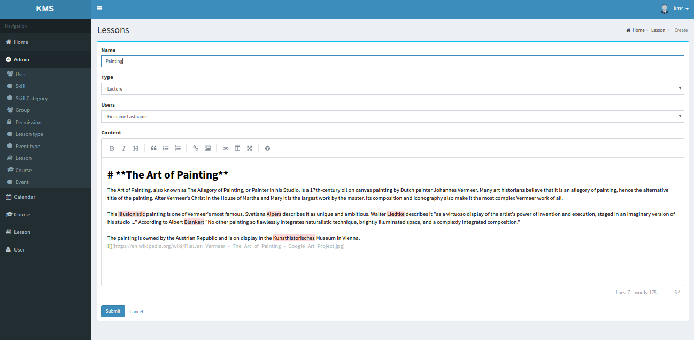

После успешного входа в систему в правом вехнем углу экрана, кнопки «Register» и «Log in» пропадут, а на их месте появится стандартное изображение профиля и имя. Нажав на имя, появится выпадающий список с двумя пунктами: «Profile» и «Log out». Выбрав
«Log out», осуществится выход их системы, а с случае выбора «Profile», осуществится переход на страницу редактирования профиля текущего пользователя, представленную на рисунке 5.6.
Рисунок 5.6 – Страница редактирования профиля
Для пользователя, который только что зарегистрировался, многие поля формы профиля будут пустыми, как и фотография, эта информация не является обязательной для заполнения, но она может быть изменена. Для того чтобы изменить фотографию профиля, нужно нажать
на кнопку «Upload file», которая находится слева на странице под стандартной картинкой профиля, после чего появится модальное окно представленное на рисунке 5.7.
Рисунок 5.7 – Модальное окно загрузки фотографии
Для продолжения загрузки, нужно нажать на кнопку «Choose file», а для отмены операции – «Cancel». В случае продолжения операции нужно будет выбрать подходящую фотографию и подтвердить загрузку, после чего появится следующее модальное окно, представленное
на рисунке 5.8, в котором нужно указать видимую область фотографии.
Рисунок 5.9 – Выделение видимой области фотографии
После того как видимая область выбрана, для подтверждения нужно нажать «OK» и слева на странице профиля появится новая фотография (см. Рисунок 5.10).
Рисунок 5.10 – Обновленная фотография профиля
В случае изменения данных профиля и их сохранения, вверху формы профиля появится сообщение об успешном сохранении информации, представленное на рисунке 5.11.
Рисунок 5.11 – Сообщение об успешном сохранении информации
Список зарегистрированных пользователей можно получить, выбрав в боковом меню слева пункт «User». На странице, представленной на рисунке 5.12, можно осуществлять фильтрацию списка пользователей, а также просмотреть профиль конкретного пользователя нажав
на соответствующий элемент списка.
Рисунок 5.12 – Страница зарегистрированных пользователей
На рисунке 5.13 представлена страница просмотра профиля выбранного пользователя.
Рисунок 5.13 – Страница просмотра профиля выбранного пользователя
Для того чтобы найти подходящие курсы либо создать их, нужно в боковом меню слева выбрать пункт «Course». На открывшейся странице, представленной на рисунке 5.14, показан список имеющихся курсов, а также кнопка создания нового курса и строка фильтрации.
Рисунок 5.14 – Страница курсов
В случае выбора одного из курсов, осуществится переход на страницу просмотра курса, представленную на рисунке 5.15, на которой представлена информация о конкретном курсе, а также список уроков, входящих в данный курс.
Рисунок 5.16 – Страница просмотра конкретного курса
Для того чтобы просмотреть список уроков, найти либо создать урок, нужно в боковом меню слева выбрать пункт «Lesson». На появившейся странице, представленной на рисунке 5.17, показан список имеющихся уроков, а также кнопка создания и поле фильтрации.
Рисунок 5.17 – Страница уроков
В случае выбора конкретного урока, пользователь попадает на страницу просмотра данного урока, представленную на рисунке 5.18, на которой изображено содержимое урока в удобочитаемом виде. Также на каждый урок, пользователь может оставить свой комментарий.
Форма добавления комментариев расположена внизу страницы.
Рисунок 5.18 – Страница просмотра конкретного урока
Администратор либо автор конкретного урока может произвести редактирование, нажав на кнопку редактирования урока на странице «Lesson». После чего осуществится переход на страницу редактирования урока, представленную на рисунке 5.19.
 Рисунок 5.19 – Форма редактирования урока
Добавление новых навыков, категорий, разрешений, а также управление группами пользователей осуществляется администраторам. На рисунке 5.20 представлена форма создания навыка администратором.
Рисунок 5.20 – Форма создания навыка администратором
На рисунке 5.21 представлен список навыков, находящихся в системе в разделе администрирования.
Рисунок 5.21 – Список навыков в разделе администрирования
Список всех страниц приложения представлен в боковом меню слева. Следует заметить, что пункты бокового меню будут отличаться у администратора и обычного пользователя, также это касается и функциональных ограничений.